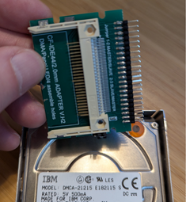
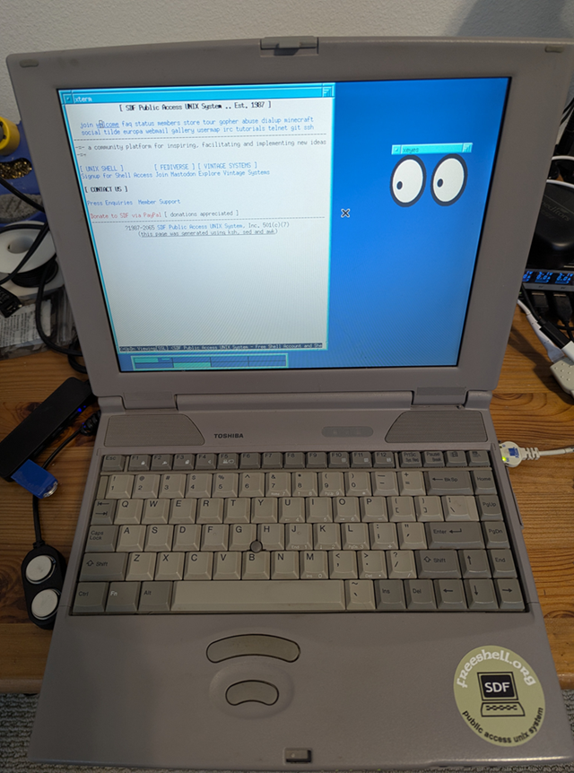

Running NetBSD 10.1 on a 1998 Toshiba laptop
Moving from NetBSD 5.1 to NetBSD 10.1
Here are my notes on running NetBSD 10.1 on my first personal laptop that I still keep, a 1998 i586 Toshiba Satellite Pro with 81Mb of RAM and a 1Gb IBM 2.5" IDE HD. In summary, the latest NetBSD runs well on this old hardware using an IDE to CF adapter and several changes to the i386 GENERIC kernel.
During the holiday break time of year I take out my old hardware and make sure it passes a threshold: it can boot the latest NetBSD. Last year (2003) at this time I didn't have an IDE adapter to either externally upgrade the old laptop's original HD from NetBSD 5.1 to 10_RC (at the time) or replace the HD with solid state storage (e.g. Compact Flash drive). I also didn't take the time to aggressivly trim the i386 GENERIC kernel to save available RAM (working with little to start with). The result was a lot of swap space use with 10_RC GENERIC and root on a USB memory stick. My 2023 notes are here.
This year I finally got motived and bought a CF to IDE HD adapter: 
I still had the same problem though: both the FD and CDROM drives long since died, and the BIOS doesn't support PXE, so there was no way to boot an install image on separate storage. I needed to create a custom boot image with NetBSD 10.1.
I'll get into how I created a custom image from a build, and what hardware works and doesn't work.
Building an i386 NetBSD-10.1 release.
This is the most straight forward part. I have an i7-4770, 16gb, amd64 NetBSD build machine that I use build.sh for cross compiling. For an i386 kernel for my old laptop, I needed to strip out a lot of unused drivers and verbose messages. Here is the resulting i386 kernel config.
First, I used CVS to fetch 10.1-RELEASE:
cvs checkout -r netbsd-10-1-RELEASE -P src
I then copied src/sys/arch/i386/conf/GENERIC kernel config to src/sys/arch/i386/conf/TOSHSATPRO. This is the file that has my kernel changes.
In the src directory and with the new kernel config, I built the i386 toolchain, the custom kernel, and a release:
./build.sh -U -u -O ../obj -T ../tools -j8 -m i386 -a i386 tools
./build.sh -U -u -j8 -O ../obj -T ../tools -m i386 -a i386 kernel=TOSHSATPRO
./build.sh -U -u -j8 -O ../obj -T ../tools -m i386 -a i386 kernel=TOSHSATPRO release
I didn't bother fetching and building X. Instead, I used sysinst to install X later. The goal here is to create a minimal system on a storage device that can boot the kernel and root.
Creating a custom boot image on a CF drive.
I used fdisk on my build machine with a USB CF adatper to create a NetBSD partition on a 4gb CF card (/dev/sd0) and then disklabel to create a 2900Mb 'a' 4.2BSD and a 99Mb 'b' swap. Then newfs to format 'a'.
To boot from the CF, using notes from installboot(8), I did the following:
- fdisk -c mbr /dev/rsd0c
- installboot -v -m i386 /dev/rsd0a bootxx_ffsv1
- mount /dev/sd0a /mnt
- cp boot /mnt
- mkdir /mnt/kern /mnt/proc
- tar zxvfp base.tgz ...
All of the files are from my custom i386 release build. Specifically, mbr, bootxx_ffsv1, and boot are under obj/destdir.i386/usr/mdec. That final step is expanding the sets to /mnt (/ on the CF). For a minimal system, you need base.tgz, kern-GENERIC.tgz, modules.tgz, and etc.tgz. Since I had enough space, I also used comp.tgz, man.tgz, text.tgz, and misc.tgz.
I then renamed /mnt/netbsd to /mnt/netbsd-GENERIC and copied my custom kernel, obj/sys/arch/i386/compile/TOSHSATPRO/netbsd, to /mnt.
I then edited /mnt/etc/rc.conf with the following:
- rt_configured=YES
- hostname=toshsatpro
- wscons=YES
- dhcpcd=YES
- ntpd=YES
- ntpd_flags="-g"
- sshd=NO
- makemandb=NO
For the last two, I didn't want to start and wait for sshd to create keys. I'll set that to YES after running sysinst and manually creating entropy. Since I installed man.tgz, I didn't want my feeble i586 133mhz laptop to toil away on first boot indexing man pages, so I set makemandb=NO.
I attached a 3Com PCMCIA NIC that uses the ep driver. I have an IPv6-only network, so I added the following lines to /mnt/etc/dhcpcd.conf:
- interface ep0
- ipv6only
Finally, I created a minimal /mnt/etc/fstab:
/dev/wd0a / ffs rw 1 1
/dev/wd0b none swap sw 0 0
kernfs /kern kernfs rw
ptyfs /dev/pts ptyfs rw
procfs /proc procfs rw
Note that I need to boot from the IDE adapter, so I need /dev/wd0, not /dev/sd0, for root.
Cool, the initial boot config is completed.
Booting NetBSD 10.1 RELEASE
After replacing the old IBM DMCA-21215 E182115 IDE HD (with NetBSD 5.1) with a CF to IDE adapter and my new boot image, I fired up the old device. It booted!
The complete dmesg is below. With my custom kernel I have 71732 KB available RAM out of 81660 KB total. This is a good improvement over GENERIC which only leaves me with 57900 KB available.
The first step was to run sysinst to complete the configuration. I set the time zone, created entropy, added a user, etc. Later, I added any additional sets I didn't with the first install. With a working network, I also installed pkgin.
What works
I have enough hardware working to enjoy using my old (and first) laptop from the '90s running a modern O/S. Compared to some ARM64 devices I have, I like the real RS-232 port. It even has an LPT port.
I was able to add a USB hub to the single USB 1.0 port and got an Edimax (urtwn) WiFi adapter connected to my 2.4Ghz IoT network. Eventually I'll find my old Cisco Air PCMCIA WiFi card and give that a try. I was also able to connect various USB storage devices. I'll add a USB Bluetooth adapter to the list to try.
The internal NiMh batteries are long dead so I depend on NTP to set the clock. Shockingly, the original 26 year old Li-ion main battery can still hold a charge at least long enough to move the laptop across the room.
What doesn't work
I'm not able to use more than one PCMCIA device without issues. The laptop has 2 sockets. I first noticed when using a PCMCIA CF adapter with my 3Com NIC up. I get the following error when accessing the CF card adapter (/dev/wd1):
[ 262.563457] pcmcia1: card irq 9
[ 275.579772] autoconfiguration error: wdc2:0:0: lost interrupt
[ 275.579772] type: ata tc_bcount: 1536 tc_skip: 64000
[ 275.579772] wd1a: device timeout reading fsbn 364733 of 364608-364735 (wd1 bn 366781; cn 179 tn 5 sn 29), xfer f5c, retry 0
I'm still debuging this.
I can't get the SoundBlaster audio HW to work. It times out.
I couldn't get an apm0 device in my kernel config to compile with NetBSD 10.1. It worked in 5.1. Hence I don't have any Advanced Power Management. I am able to use the fan utility in pkgsrc/sysutils/toshutils to keep the laptop running cool.
None of these issues are big deal.
Summary
That was a fun project and along the way I once again learned some things about the NetBSD boot process and kernel configuration.
I'll definitely stick with NetBSD 10.1-RELEASE booting from a CF-IDE adapter. It's a great new release, even for a nostalgic 90s laptop. 
Copyright (c) 1996, 1997, 1998, 1999, 2000, 2001, 2002, 2003,
2004, 2005, 2006, 2007, 2008, 2009, 2010, 2011, 2012, 2013,
2014, 2015, 2016, 2017, 2018, 2019, 2020, 2021, 2022, 2023,
2024
The NetBSD Foundation, Inc. All rights reserved.
Copyright (c) 1982, 1986, 1989, 1991, 1993
The Regents of the University of California. All rights reserved.
NetBSD 10.1 (TOSHSATPRO) #31: Wed Dec 25 20:59:21 PST 2024
idatum@baker:/home/idatum/netbsd10.1/obj/sys/arch/i386/compile/TOSHSATPRO
total memory = 81660 KB
avail memory = 71732 KB
timecounter: Timecounters tick every 10.000 msec
timecounter: Timecounter "i8254" frequency 1193182 Hz quality 100
mainbus0 (root)
cpu0 at mainbus0
cpu0: Use cpuid to serialize rdtsc
cpu0: Intel 586-class, 133MHz, id 0x543
cpu0: node 0, package 0, core 0, smt 0
pci0 at mainbus0 bus 0: configuration mode 1
pci0: i/o space, memory space enabled, rd/line, rd/mult, wr/inv ok
pchb0 at pci0 dev 0 function 0: vendor 1179 product 0601 (rev. 0x27)
vga0 at pci0 dev 4 function 0: vendor 102c product 00e4 (rev. 0xc2)
wsdisplay0 at vga0 kbdmux 1: console (80x25, vt100 emulation)
wsmux1: connecting to wsdisplay0
wsdisplay0: screen 1-3 added (80x25, vt100 emulation)
drm at vga0 not configured
ohci0 at pci0 dev 11 function 0: vendor 1033 product 0035 (rev. 0x01)
ohci0: interrupting at irq 11
ohci0: OHCI version 1.0
usb0 at ohci0: USB revision 1.0
isa0 at mainbus0
lpt0 at isa0 port 0x378-0x37b irq 7
com0 at isa0 port 0x3f8-0x3ff irq 4: ns16550a, 16-byte FIFO
com1 at isa0 port 0x2f8-0x2ff irq 3: ns16550a, 16-byte FIFO
pckbc0 at isa0 port 0x60-0x64
pckbd0 at pckbc0 (kbd slot)
pckbc0: using irq 1 for kbd slot
wskbd0 at pckbd0: console keyboard, using wsdisplay0
pms0 at pckbc0 (aux slot)
pckbc0: using irq 12 for aux slot
wsmouse0 at pms0 mux 0
attimer0 at isa0 port 0x40-0x43
wdc0 at isa0 port 0x1f0-0x1f7 irq 14
atabus0 at wdc0 channel 0
sb0 at isa0 port 0x220-0x237 irq 5 drq 1: dsp v3.01
audio0 at sb0: playback, capture, half duplex
audio0: slinear_le:16 -> ulinear_le:8 2ch 20000Hz, blk 400 bytes (10ms) for playback
audio0: slinear_le:16 <- ulinear_le:8 2ch 20000Hz, blk 400 bytes (10ms) for recording
opl0 at sb0: model OPL3
midi0 at opl0: SB Yamaha OPL3
wss0 at isa0 port 0x530-0x537 irq 10 drq 0,1: CS4231
audio1 at wss0: playback, capture, full duplex
audio1: slinear_le:16 2ch 48000Hz, blk 1920 bytes (10ms) for playback
audio1: slinear_le:16 2ch 48000Hz, blk 1920 bytes (10ms) for recording
pcppi0 at isa0 port 0x61
midi1 at pcppi0: PC speaker
sysbeep0 at pcppi0
pcic0 at isa0 port 0x3e0-0x3e1 iomem 0xd0000-0xdffff irq
pcic0: controller 0 (Intel 82365SL Revision 1) has sockets A and B
pcmcia0 at pcic0 controller 0 socket 0
pcmcia1 at pcic0 controller 0 socket 1
attimer0: attached to pcppi0
timecounter: Timecounter "clockinterrupt" frequency 100 Hz quality 0
timecounter: Timecounter "TSC" frequency 132844400 Hz quality 3000
pcic0: controller 0 detecting irqs with mask 0xdeb8:..9..15
pcic0: using irq 9 for socket events
autoconfiguration error: pcic0: WARNING: powerhook_establish is deprecated
autoconfiguration error: pcic0: WARNING: powerhook_establish is deprecated
uhub0 at usb0: NetBSD (0x0000) OHCI root hub (0x0000), class 9/0, rev 1.00/1.00, addr 1
uhub0: 2 ports with 2 removable, self powered
ep0 at pcmcia0 function 0: <3Com, Megahertz 574B, B, 001>
pcic0: port 0x400-0x41f
pcmcia0: card irq 15
ep0: address 00:50:04:fd:31:c2, 64KB word-wide FIFO, 1:1 Rx:Tx split
tqphy0 at ep0 phy 0: 78Q2120 10/100 media interface, rev. 10
tqphy0: 10baseT, 10baseT-FDX, 100baseTX, 100baseTX-FDX, auto
uhub1 at uhub0 port 1: vendor 1a40 (0x1a40) USB2.0 HUB (0x0101), class 9/0, rev 2.00/1.00, addr 2
uhub1: 4 ports with 4 removable, self powered
umass0 at uhub1 port 1 configuration 1 interface 0
umass0: SMI Corporation (0x090c) USB DISK (0x1000), rev 2.00/11.00, addr 3
umass0: using SCSI over Bulk-Only
scsibus0 at umass0: 2 targets, 1 lun per target
wd0 at atabus0 drive 0
wd0: <SanDisk SDCFH-004G>
wd0: drive supports 1-sector PIO transfers, LBA48 addressing
wd0: 3815 MB, 7751 cyl, 16 head, 63 sec, 512 bytes/sect x 7813120 sectors
wd0: drive supports PIO mode 4, DMA mode 2, Ultra-DMA mode 4 (Ultra/66)
swwdog0: software watchdog initialized
WARNING: 2 errors while detecting hardware; check system log.
boot device: wd0
root on wd0a dumps on wd0b
root file system type: ffs
kern.module.path=/stand/i386/10.1/modules
pcmcia0: card irq 15
wsdisplay0: screen 4 added (80x25, vt100 emulation)